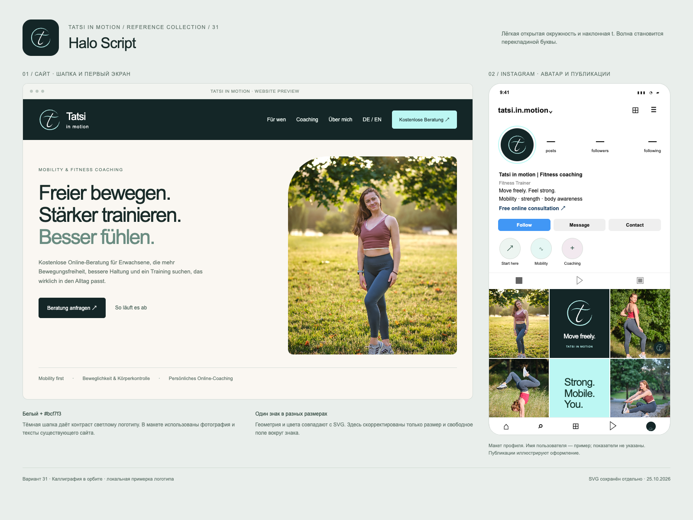
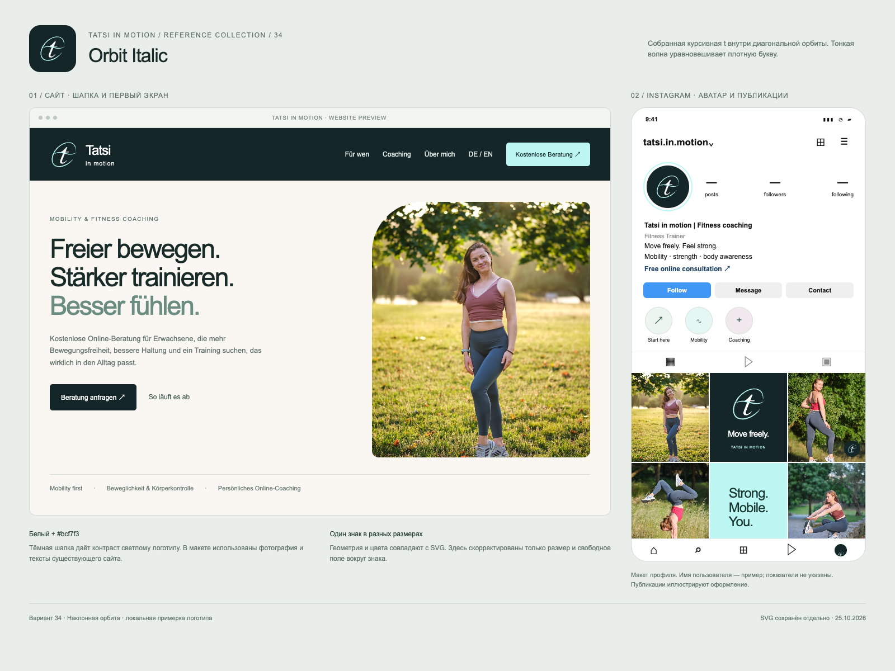
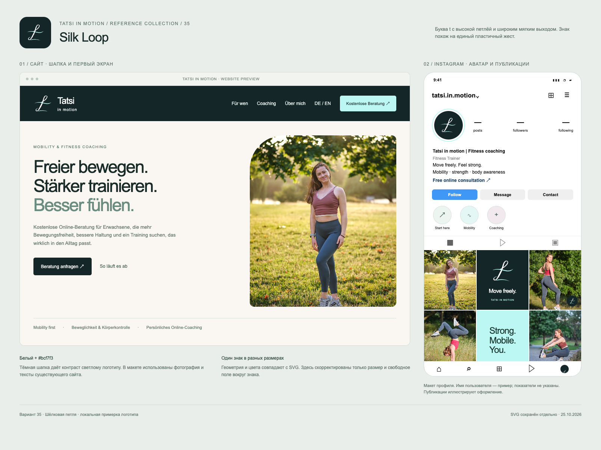

Линия. Буква. Движение.
20 вариантов по вашему референсу: 21–30 (буквы из антиквы и каллиграфии, рисованы для белого фона) и 31–40 (рисованные контуры). Каллиграфические t, антиквенные T, открытые орбиты и мятные ленты.
Наведите мышь на номер: ниже появится один выбранный вариант на сайте и в Instagram. На телефоне нажмите на номер.
21 / Ring t
Скачать SVG ↓

22 / Ribbon T
Скачать SVG ↓

23 / Tatsi in motion
Скачать SVG ↓

24 / Stacked ring
Скачать SVG ↓

25 / Script tatsi
Скачать SVG ↓

26 / Tm monogram
Скачать SVG ↓

27 / Wave crossbar
Скачать SVG ↓

28 / Orbit T
Скачать SVG ↓

29 / Script ti
Скачать SVG ↓

30 / Flourish T
Скачать SVG ↓

31 / Halo Script
Скачать SVG ↓


32 / Ribbon Serif
Скачать SVG ↓

33 / Air Signature
Скачать SVG ↓

34 / Orbit Italic
Скачать SVG ↓


35 / Silk Loop
Скачать SVG ↓
